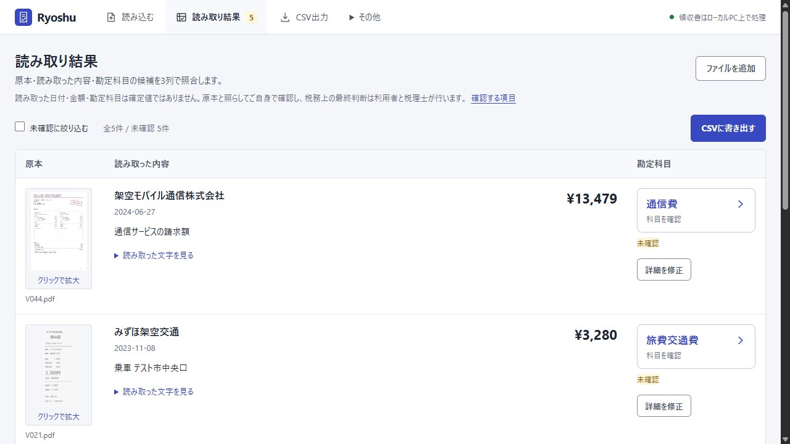

Windowsで領収書を読み取り、CSVへ
領収書のPDFや画像をまとめて読み取り、勘定科目候補を会計ソフト向けCSVに出力する、ローカルPC上のCPUで動くWindowsアプリです。
初回セットアップでは、実行環境とモデルのダウンロードにインターネット接続と、表示されるモデルライセンス・Microsoftの条項への同意が必要です。 インストール手順

使い方
領収書を読み込む
PDFや画像の領収書を、複数まとめて読み込みます。
内容を確認・修正
拡大した原本と読み取り結果、勘定科目候補を見比べて修正。科目は一覧から選択でき、お気に入りも使えます。
CSVを出力
汎用、freee、マネーフォワード クラウド、弥生のCSV形式に対応しています。
ご利用前の注意
- 読み取りと勘定科目候補の推定はローカルPC上のCPUで実行。外部AIアカウントやAPIキーは不要です。
- 保存した帳簿と領収書の原本は暗号化されます。エクスポートしたCSVは暗号化されません。
- Ryoshuは読み取りと勘定科目候補の作成を補助します。利用者が原本と照合し、税務上の判断は税理士にご相談ください。
- スマートフォンやLANからの利用には対応していません。最小メモリ要件は未測定です。